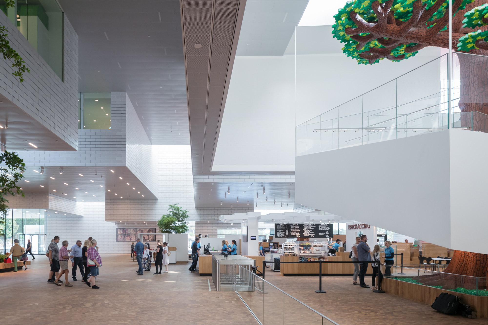

返回案例库
01
CASE.MD DECK
LEGO House / LEGO Brand House
LEGO House translates the logic of LEGO bricks into stacked public volumes, playable roof terraces, and color-coded interior learning experiences.
Culturaleducationbrand experience
